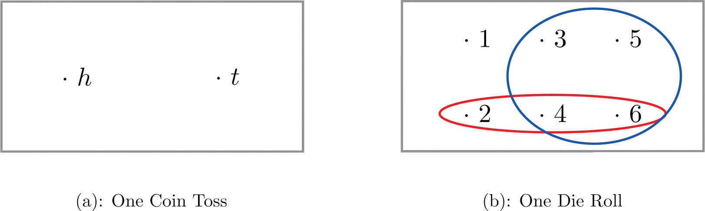
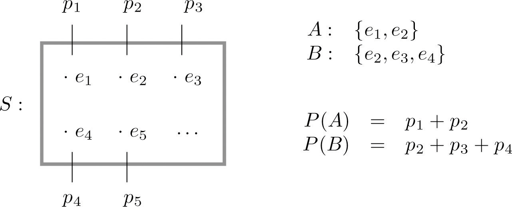
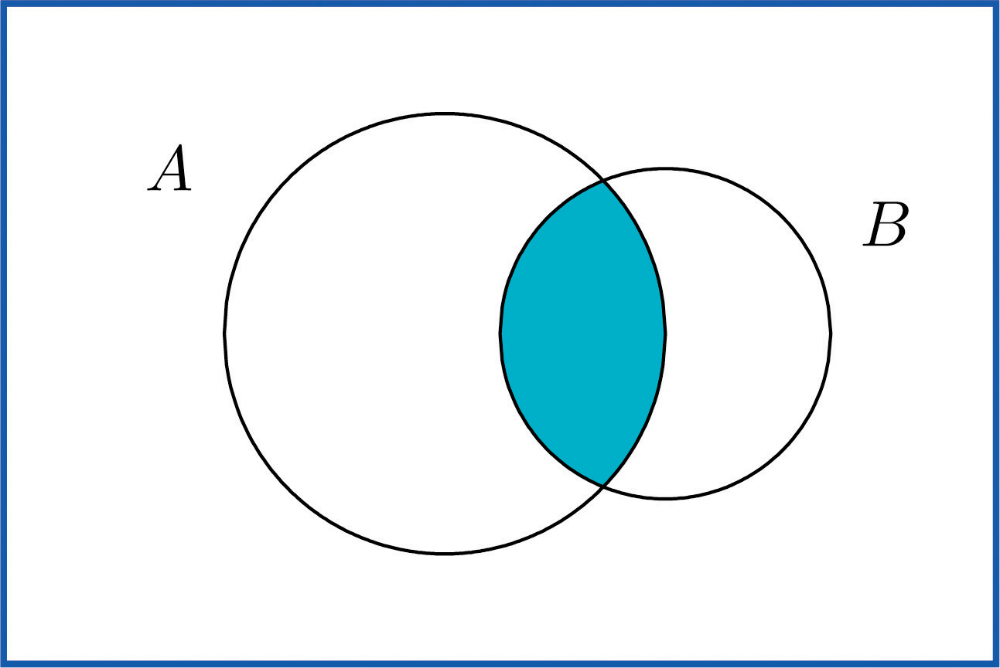
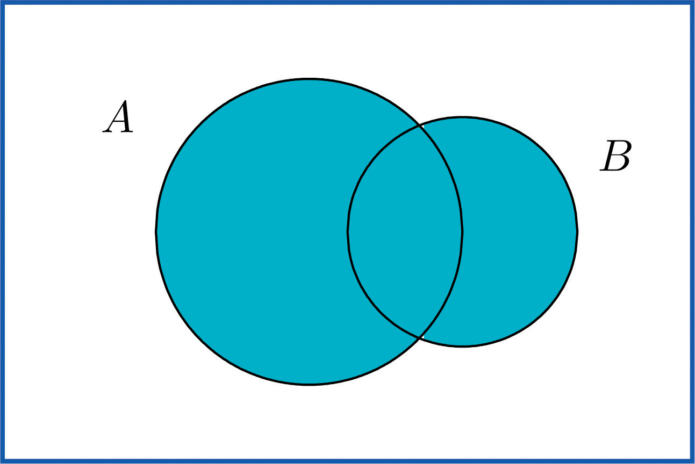

Introduction to probability theory
ECON 2B03, Winter 2026
Part B | Lecture 1
Chris Muris, McMaster University
Agenda
Roadmap
Previously: Part A summary
- Foundations:
- descriptive vs inferential statistics
- populations vs samples; parameters vs statistics
- Data and variables: measurement, types, and study design
- Descriptive statistics:
- tables and graphs
- summary measures (mean, sd, median, quartiles, IQR, z-scores)
- Tools: using R/Quarto to compute, visualize, and report
Previously: Part B so far
- No Part B lectures yet; we start probability theory today
This lecture
- Random experiments, sample spaces, and events
- Probability
- Combining events and computing probabilities
Readings and homework
- Readings: SZ 3.1-3.2
- Homework: SZ 3.1: 3, 7, 12, 15, 16, 21, 24; SZ 3.2: 2, 3, 5, 15, 17, 21
Overview
- Why this matters: inference and prediction depend on how random variation behaves.
- What you will learn:
- How to define outcomes and events
- How to attach probabilities to those events
- How to combine events using union, intersection, and complements
Part I: Overview
Why study probability theory?
Election polls
- A polling organization questions 1,200 voters.
- They want to estimate the proportion of all voters who support a candidate.
- We expect the sample proportion to be close to the population proportion…
- …but because of randomness, it might not be.
- Probability theory provides the tools to quantify this randomness.
- It describes the likelihood that the sample result is close to the truth.
- Statistical inference uses these tools to draw valid conclusions.
- It turns “likelihood measures” into confidence statements about the population.
To study statistical inference, we must first study probability theory.
Probability theory:
- Analyzes random phenomena (coin flips, market fluctuations, survey samples).
- “Given the world (parameters), what data should we expect?”
Statistical inference:
- Learns about the world from data.
- “Given the data, what can we say about the world (parameters)?”
Pedagogical note
- Part A used real data sets to ask interesting questions.
- We will return to using such examples in Part C of the course.
- In probability theory, simple examples (coins, dice, cards) help isolate the logic.
Why this matters for inference
- Confidence intervals and hypothesis tests rely on probability rules.
- If we can compute \(P(\text{data} \mid H_0)\), we can judge whether the data are surprising.
- Today’s tools are the foundation for those calculations.
Part II: Basic Definitions
Definitions
- To get started with probability theory, we need a few basic definitions:
- random experiments and trials
- sample space
- event
- probability
An experiment is any repeatable process from which an outcome, measurement, or result is obtained.
A random experiment is an experiment that produces a definite outcome that cannot be predicted with certainty.
A trial is one repetition of a random experiment.
Coin flips, die rolls, and surveys
- Coin flip:
- Random experiment: Flipping a coin and noting the outcome (heads or tails).
- Trial: Say you flip a coin 100 times. The fifth flip is one trial.
- Die roll:
- Random experiment: Rolling a six-sided die and observing the number of dots.
- Trial: Each individual roll.
- Survey:
- Random experiment: Selecting a voter at random and asking their preference.
- Trial: Each person you interview.
Sample space
- For a random experiment, the sample space, or outcome space, is the set of all possible outcomes.
Listing sample spaces
What are possible sample spaces for the following experiments?
Tossing a single coin once
Rolling a single die once
Drawing a single card once
Spinning a roulette wheel once
Tossing a single coin twice
Rolling two dice at once
(There is no single correct answer. Coin flips: where it lands; how long it is in the air, etc.)
Employment status survey
- You survey a randomly selected adult and ask whether they are employed, unemployed, or not in the labor force.
- Sample space: \(S = \{\text{employed}, \text{unemployed}, \text{not in labor force}\}\)
- Simple event: the person is employed (\(\{\text{employed}\}\))
- Composite event: the person is not working (\(\{\text{unemployed}, \text{not in labor force}\}\))
Events
- An event is a subset of the sample space, (or: any set of outcomes)
- An event \(E\) is said to occur on a particular trial of the experiment if the outcome observed is an element of the set \(E\).
- We distinguish between two types of events:
- a simple event is any single basic outcome from a random experiment
- a composite event is any combination of two or more basic outcomes from a random experiment
Example: Events in a die roll
Consider rolling a single six-sided die: \(S = \{1, 2, 3, 4, 5, 6\}\).
Simple event: Rolling a 2 (\(E = \{2\}\)).
Composite event: Rolling an even number (\(E = \{2, 4, 6\}\)).
Composite event: Rolling a number greater than 2 (\(T = \{3, 4, 5, 6\}\)).
Rolling an odd number less than 5: \(E = ?\)
Interest rate opinions
Randomly select two people, and ask them if they think that interest rates are going up. They must answer yes (Y) or no (N).
The simple events are \(a_1=(Y,Y)\), \(a_2=(Y,N)\), \(a_3=(N,Y)\), \(a_4=(N,N)\).
The sample space is \(S=\{a_1,a_2,a_3,a_4\}.\)
The event \(A_1\), “at least one person said yes”, is \(A_1=\{a_1,a_2,a_3\}\).
The event \(A_2\), “everybody says yes”, is \(A_2 = \{a_1\}.\)
Venn diagram of events

- An alternative visualization is a tree diagram (see SZ 3.1: Example 4)
Probability
The probability of an outcome \(e\) in a sample space \(S\) is a number \(p\) between \(0\) and \(1\) that measures the likelihood that \(e\) will occur on a single trial of the corresponding random experiment.
The value \(p=0\) corresponds to the outcome \(e\) being impossible.
The value \(p=1\) corresponds to the outcome \(e\) being certain.
For an outcome \(e_1\) or \(a_3\) we will sometimes write \(p_1\) or \(p_3\), or \(P(e_1)\) or \(P(a_3)\).
Fair coin toss
- Consider a single toss of a fair coin: \(S = \{Heads, Tails\}\). If the coin is fair, then \[P(Heads) = P(Tails) = 0.5\]
The probability of an event \(A\), denoted \(P(A)\), is the sum of the probabilities of the individual outcomes of which it is composed.
If \(E = \{e_1,e_2,\cdots,e_k\}\) is an event composed of \(k\) outcomes, then \[P(E) = \sum_{j=1}^k P(e_j) = P(e_1) + P(e_2) + \cdots + P(e_k).\]
Probabilities on a Venn diagram

Survey response rates
Suppose 70% of contacted households respond to a short census survey. Let \(R\) be the event that a household responds.
\(P(R)=0.70\)
\(P(R^c)=0.30\)
- about 30% will not respond in a large random sample
Tossing a coin twice
- If the sample space is \(\{a_1=(H,H)\), \(a_2=(H,T)\), \(a_3=(T,H)\), \(a_4=(T,T)\}\), and each outcome occurs with probability 1/4, i.e., \[P(a_i)=\frac{1}{4},\quad i=1,2,3,4.\]
Consider the event “get at least one head on two tosses of a coin”, i.e. \(A_1=\{a_1,a_2,a_3\}\), and its negation \(A_2=\{a_4\}\).
The probability of the event \(A_1\) is the sum of the probabilities of the simple events \(\{a_1,a_2,a_3\}\): \[\begin{align*} P(A_1)&=P(a_1)+P(a_2)+P(a_3)=\frac{1}{4}+\frac{1}{4}+\frac{1}{4}=\frac{3}{4},\text{ and}\\ P(A_2)&=P(a_4)=\frac{1}{4}. \end{align*}\]
Part III: Counting
Probability via counting
- Counting techniques are important for determining probabilities.
- Are you comfortable with:
- Factorials: Product of integers 1 to \(n\), denoted \(n!\). Note \(0!=1\).
- Permutations: Arrangement of \(x\) things from \(n\) in specific order: \({_nP_x}=\frac{n!}{(n-x)!}\)
- Combinations: Arrangement of \(x\) things from \(n\) without regard to order: \({_nC_x}=\frac{n!}{(n-x)!x!}\)
Board of directors (6 candidates)
A company has 6 candidates for the Board of Directors.
Permutations (Order matters: President vs Vice-President):
Selecting a President and a Vice-President from 6 candidates. \[{_6P_2}=\frac{6!}{(6-2)!} = \frac{6 \times 5 \times 4 \times 3 \times 2 \times 1}{4 \times 3 \times 2 \times 1} = 6 \times 5 = 30 \text{ ways.}\]
Combinations (Order does not matter: Committee Members):
- Selecting a committee of 2 members from 6 candidates. \[{_6C_2}=\frac{6!}{(6-2)!2!} = \frac{30}{2} = 15 \text{ ways.}\]
- If you are not comfortable with these concepts: let me know and we will review.
Part IV: Combining Events
Probability via combining events
- We can take one or more events and make new ones by:
- taking unions
- taking intersections
- taking complements
- We can then compute the probability of the resulting events.
Intersection
The intersection of events \(A\) and \(B\), denoted \(A \cap B\), is the collection of all outcomes that are elements of both of the sets \(A\) and \(B\).
It corresponds to combining descriptions of the two events using the word and.

Stagflation
Consider the state of the economy next year. Two key variables:
- Inflation (High \(H_I\) vs Low \(L_I\)) and
- Unemployment (High \(H_U\) vs Low \(L_U\)).
In our framework:
- Sample Space: All possible combinations. \[S = \{ (L_I, L_U), (H_I, L_U), (L_I, H_U), (H_I, H_U) \}\]
- Event A: High Inflation (\(A = \{ (H_I, L_U), (H_I, H_U) \}\))
- Event B: High Unemployment (\(B = \{ (L_I, H_U), (H_I, H_U) \}\))
- Intersection (\(A \cap B\)): “Stagflation”, the worst of both worlds. \[A \cap B = \{ (H_I, H_U) \}\]
- Events \(A\) and \(B\) are mutually exclusive, or disjoint, or incompatible, if they have no elements in common.
- It is impossible for both \(A\) and \(B\) to occur.
- The probability rule for mutually exclusive events states that if events \(A\) and \(B\) are mutually exclusive, their intersection has probability zero: \[P(A \cap B) = 0\]
- Since they share no outcomes, they can never happen simultaneously.
- We sometimes write \(A \cap B = \emptyset\), i.e., the intersection is the empty set (the set with no elements).
Face cards vs aces, and employment vs joblessness
- Deck of cards:
- \(A\): Drawing a Face card (J, Q, K)
- \(B\): Drawing an Ace
- You cannot draw a card that is both a Face card and an Ace
- Thus, \(P(A \cap B) = 0\)
- Employment survey:
- Outcomes (\(S\)): Full-time (\(F\)), Part-time (\(P\)), Unemployed (\(U\)), Not in Labor Force (\(N\))
- Event \(E\) (Employed): \(\{F, P\}\)
- Event \(J\) (Jobless): \(\{U, N\}\)
- Sets \(E\) and \(J\) are disjoint (\(E \cap J = \emptyset\))
Union
The union of events \(A\) and \(B\), denoted \(A \cup B\), is the collection of all outcomes that are elements of one or the other of the sets \(A\) and \(B\), or of both of them.
It corresponds to combining descriptions of the two events using the word or.
Union of two events

Poverty and language in the U.S.
- Consider the following example, calibrated using data from the American Community Survey (ACS):
- Event \(P\): Living below the poverty line.
- Event \(L\): Speaking a foreign language at home.
- \(P(P) = 0.146\) (Poverty)
- \(P(L) = 0.207\) (Speaking foreign language)
- Intersection \(P(P \cap L) = 0.042\) (Both)
- Union (\(P \cup L\)): Americans who live below the poverty line or speak a foreign language (or both).
Additive rule
The additive rule of probability says that \[P(A\cup B) = P(A) + P(B) - P(A\cap B).\]
- The probability of event \(A\) or \(B\) happening equals…
- the probability of \(A\) alone,
- plus the probability of \(B\) alone,
- minus the probability of \(A\) and \(B\) happening at the same time.
Exercise: Poverty and language
From the ACS: \(P(P) = 0.146\) (poverty), \(P(L) = 0.207\) (speaks a foreign language), \(P(P \cap L) = 0.042\) (both).
- Calculate the probability that a randomly selected person lives in poverty or speaks a foreign language.
- We want \(P(P \cup L)\). Using the additive rule:
\[ \begin{aligned} P(P \cup L) &= P(P) + P(L) - P(P \cap L) \\ &= 0.146 + 0.207 - 0.042 \\ &= 0.311 \end{aligned} \]
- 31.1% of Americans live in poverty or speak a foreign language at home.
- The special addition law says that, for any two mutually exclusive events \(A\) and \(B\), \[P(A\cup B) = P(A) + P(B).\]
A standard deck of 52 cards
- A standard deck has:
- 4 suits (clubs, spades, hearts and diamonds)
- 13 cards per suit (Ace-King)
- 3 face cards per suit (Jack, Queen, King)
- Total: 12 face cards

Drawing a face card
You draw one card from a standard deck.
Let the event \(A\) denote drawing a face card.
The probability of the event \(A\) is the sum of the probabilities of drawing any of the 12 face cards.
Hence, the probability of the event \(A\) is \[P(A)=\frac{1}{52}+\frac{1}{52}+\dots+\frac{1}{52}=\frac{12}{52}\]
Face card or heart (general addition law)
You draw one card from a standard deck.
- Let the event \(B\) denote drawing a heart, so \(P(B)=13/52\)
- What is the probability of \(A\) or \(B\) (i.e., \(P(A\cup B)\), getting a face card or a heart)?
- Use the general addition law which corrects for double counting the J,Q,K of hearts (appear in both events): \[P(A\cup B)=P(A)+P(B)-P(A\cap B)=\frac{12}{52}+\frac{13}{52}-\frac{3}{52}=\frac{22}{52}\]
Heart or club (special addition law)
You draw one card from a standard deck.
Let the event \(C\) denote drawing a club, so \(P(C)=13/52\)
What is the probability of \(B\) or \(C\) (i.e., \(P(B\cup C)\), getting a heart or a club)?
These events are mutually exclusive:
- it is not possible that one card is a club and a heart
- \(P(B \cap C) = 0\)
- Use the special addition law \[P(B \cup C) = P(B) + P(C) = 13/52 + 13/52 = 1/2.\]
Complement
The complement of an event \(A\) in a sample space \(S\), denoted \(A^c\), is the collection of all outcomes in \(S\) that are not elements of the set \(A\).
It corresponds to negating any description in words of the event \(A\).
The probability rule for complements is that \(P(A^c) = 1 - P(A)\).
At least one heads in five coin tosses
Find the probability that at least one heads will appear in five tosses of a fair coin.
Call \(A\) the event in question, at least one heads will appear in five tosses. We can compute the probability directly (see Chapter 4).
Alternatively, let \(B\) denote the event no heads on five tosses.
Note that \(B^c = A\).
Also note that \(P(B)=(1/2)^5=1/32.\)
By the probability rule for complements: \[P(A) = P(B^c) = 1 - P(B) = 31/32.\]
Rolling at least one six in four rolls
- What is the probability of rolling at least one six in four rolls of a fair die?
- Let \(A\) = “at least one six.” Computing \(P(A)\) directly requires counting many cases.
- Instead, use the complement: \(A^c\) = “no sixes in four rolls.” \[P(A^c) = \left(\frac{5}{6}\right)^4 = \frac{625}{1296} \approx 0.482\] \[P(A) = 1 - 0.482 = 0.518\]
- There is about a 52% chance of rolling at least one six in four tries.
Exercises
Exercise: Sample space probabilities
From SZ 3.1:13: \(S=\{a,b,c,d,e\}\), \(U=\{a,b,d\}\), \(V=\{b,c,d\}\), with \(P(a)=P(b)=0.2\) and \(P(c)=P(d)=0.1\).
- Determine what \(P(e)\) must be.
- Find \(P(U)\).
- Find \(P(V)\).
- Probabilities must add up to 1, so \(P(e)=1-0.1-0.1-0.2-0.2=0.4\).
- \(P(U)=P(a)+P(b)+P(d)=0.5\).
- \(P(V)=P(b)+P(c)+P(d)=0.4\).
Exercise: Three coin tosses
From SZ 3.2:3: \(S=\{hhh,hht,hth,htt,thh,tht,tth,ttt\}\) with \(H\) = at least one head and \(M\) = more heads than tails.
- List the outcomes that comprise \(H\) and \(M\).
- List the outcomes that comprise \(H \cap M\), \(H \cup M\), and \(H^c\).
- Assuming all outcomes are equally likely, find \(P(H\cap M)\), \(P(H \cup M)\), and \(P(H^c)\).
- Determine whether or not \(H^c\) and \(M\) are mutually exclusive. Explain why or why not.
- \(H=\{hhh,hht,hth,htt,thh,tht,tth\}\) and \(M=\{hhh,hht,hth,thh\}\).
- \(H \cap M = M\), \(H \cup M = H\), and \(H^c=\{ttt\}\).
- \(P(H\cap M)=4/8=0.5\), \(P(H\cup M)=7/8=0.875\), and \(P(H^c)=1/8=0.125\).
- Yes. The intersection is empty because \(H^c=\{ttt\}\) is not in \(M\), so \(P(H^c\cap M)=0\).
Exercise: Language overlap
From SZ 3.2:15: 35% speak English, 15% speak German, and 3% speak both.
- What is the probability that a randomly encountered resident speaks English or German?
- Let \(E\) be English and \(G\) be German.
- \(P(E \cup G)=P(E)+P(G)-P(E\cap G)=0.35+0.15-0.03=0.47\).
- 47% can communicate in English or German.
Exercise: Guessing on an exam
A multiple-choice exam has 4 questions, each with 5 options (one correct). A student guesses randomly on every question.
- What is the probability that the student gets all 4 questions wrong?
- What is the probability that the student gets at least one question right?
- \(P(\text{wrong on one question}) = 4/5\). Since guesses are independent: \[P(\text{all wrong}) = (4/5)^4 = 256/625 \approx 0.410\]
- Use the complement rule: \[P(\text{at least one right}) = 1 - P(\text{all wrong}) = 1 - 0.410 = 0.590\]
Conclusion
These slides started from J. S. Racine’s slides for ECON2B03 at McMaster University.
Readings are from
- SZ: D. Shafer and Z. Zhang (2012), “Introductory Statistics”
- IMS: M. Çetinkaya-Rundel and J. Hardin (2023), “Introduction to Modern Statistics”
References